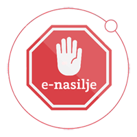

U okviru Poziva za prijavu projekata udruga u području prevencije nasilja nad i među djecom i mladima u 2018. godini, Ministarstvo za demografiju, obitelj, mlade i socijalnu politiku je Centru za nestalu i zlostavljanu djecu odobrilo provođenje projekta "Upoznajmo i prepoznajmo e-nasilje – program prevencije elektroničkog nasilja".
Projekt je prijavljen u partnerstvu s Centrom za pružanje usluga u zajednici "Izvor", Nastavnim zavodom za javno zdravstvo Primorsko - goranske županije te u suradnji sa Studijskim centrom za socijalni rad Pravnog fakulteta u Zagrebu.
Opći cilj projekta je - prevencija elektroničkog nasilja među djecom i mladima pružanjem usluge psihosocijalnog savjetovanja, provođenjem edukativnih radionica za djecu i mlade, edukacijom stručnjaka, izradom inovativnih alata i usluga te provođenjem promotivnih aktivnosti na području: